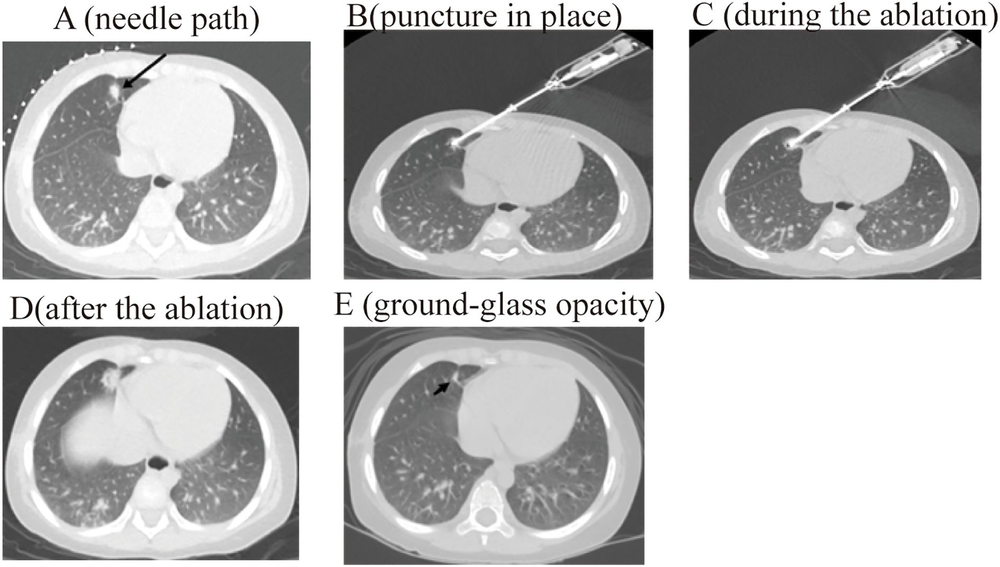
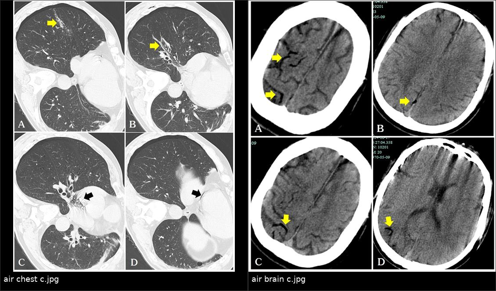

6129 — Đốt nhiệt qua da nốt phổi ở trẻ khi không mổ được / Percutaneous thermal ablation of pediatric lung nodules
Tags: pattern:not pattern:di-can pattern:hoai-tu-dong-dich pattern:gia-phinh pattern:gco vung:phoi vung:mong-phoi score:RECIST score:CTCAE protocol:CT-huong-dan protocol:dot-nhiet protocol:metastasectomy incidentaloma:not-phoi
Mức chắc chắn (certainty): tổng hợp y văn (literature synthesis) — số liệu chính lấy từ đoàn hệ nhi 91 trẻ hepatoblastoma (Li Y et al., Front Oncol 2025, PMC12665533), loạt cryoablation 28 bệnh nhân/84 u sarcoma (Aoki Y et al., BMC Cancer 2026, PMC13595653 — người lớn, dùng để tham chiếu kỹ thuật), tổng quan biến chứng đốt phổi (How GY & Pua U, Cancers 2026, PMC13702536) và các nghiên cứu về biên đốt (PMC13573749, PMC13002626); chưa có thử nghiệm ngẫu nhiên ở trẻ.
Câu chốt của bài: đốt nhiệt qua da là lựa chọn thay thế mổ khi trẻ đã mất dự trữ phổi, nốt hai bên, hoặc u nguyên phát chưa kiểm soát — nhưng chỉ an toàn khi tôn trọng 3 ngưỡng chọn bệnh nhân: ≤ 5 nốt một bên, đường kính ≤ 3 cm, cách màng phổi – mạch máu lớn – tim > 5 mm (Li 2025). Kết quả gần như tương đương mổ (kiểm soát bệnh 3 tháng 96,43% vs 96,67%), viêm phổi sau thủ thuật 19,35% vs 96,67%, không có tử vong — nhưng biên đốt < 5 mm làm tăng tái phát tại chỗ gấp ~4 lần (OR 4,15) và tràn khí màng phổi gộp 37–44% là biến chứng phải chuẩn bị sẵn.
1. Tổng quan bệnh học – cơ chế hình ảnh: vì sao đốt nhiệt thay được dao mổ
- Sinh lý bệnh: di căn phổi ở trẻ (osteosarcoma, hepatoblastoma, Wilms, Ewing, sarcoma mô mềm) là bệnh gieo rắc theo tuần hoàn phổi; mổ chỉ lấy được nốt nhìn/sờ thấy, nên tái phát là quy luật (bài 6702). Đốt nhiệt không lấy mô nhưng phá hủy tại chỗ mọi tế bào trong thể tích đốt, cho phép điều trị nhiều nốt, hai bên, nhiều lần mà vẫn giữ nhu mô — đây là lý do phương pháp này tồn tại song song với mổ.
- Vật lý – TẠI SAO nốt biến thành "quầng mờ" ngay sau đốt:
- RFA (radiofrequency ablation): dòng xoay chiều 460 kHz qua điện cực làm ion trong mô dao động ma sát → nhiệt 60–100 °C → hoại tử đông vón (coagulative necrosis). Vùng hoại tử chứa nước và protein biến tính có đậm độ mô mềm (khoảng 30–60 HU), trong khi phổi xung quanh là khí −800 đến −900 HU → trên CT cửa sổ phổi, vùng đốt hiện thành quầng mờ đông đặc (ground-glass opacity — GGO) hoặc đông đặc bao quanh nốt.
- MWA (microwave ablation): nhiệt sinh bằng dao động lưỡng cực của phân tử nước, không phụ thuộc độ dẫn điện của mô → ít bị hiệu ứng tản nhiệt (heat-sink) của mạch máu, vùng đốt dự đoán được hơn, phù hợp u lớn hơn.
- Cryoablation: chu trình đông–tan lặp lại (Joule–Thomson) → phá màng tế bào và vi mạch; giữ khung collagen nên ít tổn thương màng phổi/thành ngực hơn, hữu ích cho nốt sát màng phổi.
- Dấu hiệu che phủ (coverage sign): ngay sau đốt, quầng GGO phải bao trùm toàn bộ nốt + biên an toàn; thiếu quầng quanh một phần nốt = đốt chưa đủ (Li 2025 mô tả chính xác bước này trên CT sau đốt).
- Ngưỡng định lượng cốt lõi (bắt buộc thuộc):
- Chọn nốt (đoàn hệ nhi, Li 2025): ≤ 5 nốt một bên phổi, đường kính lớn nhất ≤ 3 cm, không xâm lấn màng phổi, cách tim – mạch máu lớn – màng phổi > 5 mm. Lý do đưa ra trong bài: đường kính > 3 cm dễ hoại tử không hoàn toàn ở rìa, còn nhiều mũi chọc/nốt làm tăng chảy máu và viêm phổi.
- Biên đốt (ablation margin): biên tối thiểu 3 chiều (3D MAM) ≥ 5 mm liên quan giảm tái phát tại chỗ (OR 0,06; KTC 95% 0,02–0,16); MAM < 5 mm gặp ở 67,7% (147/217) ca RFA phổi (PMC13573749). Ở nhóm MWA, biên an toàn ≤ 5 mm cho OR 4,152 cho tiến triển sớm ≤ 6 tháng (PMC13002626).
- Kích thước & vị trí: u > 30 mm (OR 2,681) và cách rốn phổi ≤ 10 mm (OR 3,280) là yếu tố nguy cơ tiến triển sớm độc lập (PMC13002626).
- Kết quả tức thì – 3 tháng (nhi): 26/28 (92,9%) nốt biến mất hoàn toàn với quầng GGO, 1 thoái triển dạng hốc nhỏ, 1 nốt mới ở phổi trái; kiểm soát bệnh (DCR) 96,43% so với mổ 96,67% (Li 2025).
2. Mẫu hình + chẩn đoán phân biệt theo vị trí (Gamut)
Mẫu hình: một hoặc vài nốt đặc, tròn, ngoại vi ở trẻ đã biết ung thư, không mổ được vì lý do nhu mô/vị trí/số nốt — câu hỏi không còn là "nốt là gì" mà là "nốt này đốt được không, đốt bằng gì, và ai phải được mổ".
- Theo số lượng – vị trí (quyết định kỹ thuật):
- 1–5 nốt, một bên, ≤ 3 cm, ngoại vi > 5 mm khỏi màng phổi: đốt nhiệt là lựa chọn hợp lý (RFA cho nốt nhỏ ngoại vi; MWA cho nốt lớn/trung tâm; cryo cho nốt sát màng phổi – mạch máu).
- Nhiều nốt hai bên: đốt theo thì, mỗi thì một bên phổi — không đốt hai bên cùng lúc vì nguy cơ tràn khí hai bên và suy hô hấp.
- Nốt trung tâm, sát rốn phổi ≤ 10 mm hoặc ôm mạch lớn: nguy cơ chảy máu/đốt không hết cao → hội chẩn mổ hoặc xạ định vị, không "cố đốt".
- Nốt sát màng phổi < 5 mm: nguy cơ đau, bỏng thành ngực, tràn khí dai dẳng, rò phế quản–màng phổi → cryoablation hoặc chèn màng phổi nhân tạo/khí dung môi để tách nốt.
- Theo bản chất nốt (gamut chẩn đoán):
- Di căn tái phát (hàng đầu: osteosarcoma, hepatoblastoma, Wilms, Ewing): nốt tròn, lớn dần, có thể vôi hóa (osteoid).
- Nốt lành/u hạt: vôi hóa trung tâm, đứng yên ≥ 2 năm — không đốt.
- Nhiễm nấm xâm lấn: nốt có quầng GGO, sau đó hang, bạch cầu hạt giảm — điều trị thuốc, không đốt.
- Hạch nội phổi: ≤ 10 mm, dọc khe/sát màng phổi, ổn định.
- Sẹo/stapler line sau mổ: bầu dục, bám đường khâu, không lớn (bài 6702).
- U ác thứ hai do xạ: trong trường xạ, xuất hiện nhiều năm sau — không đốt như di căn khi chưa mô bệnh.
- Gợi nhớ "5 mm – 3 cm – 5 nốt": 5 mm khoảng cách an toàn tới màng phổi/mạch máu, 3 cm đường kính tối đa, 5 nốt một bên — ba con số quyết định "đốt được hay mổ".
3. Bảng so sánh phân biệt (ma trận đối chiếu)
| Thực thể (entity) | Hình ảnh điển hình | Chốt vào (rule-in) | Chốt loại (rule-out) | Gợi ý xác nhận |
|---|---|---|---|---|
| Di căn phổi đốt được | Nốt đặc, tròn, bờ rõ, ≤ 3 cm, ngoại vi, > 5 mm khỏi màng phổi/mạch máu; 1–5 nốt một bên | Tròn + lớn dần trên chuỗi CT + tiền sử sarcoma/HB | Sát màng phổi < 5 mm, ôm mạch/rốn phổi, > 5 nốt → chọn mổ/xạ, không RFA | So CT cũ; hội chẩn đa chuyên khoa; mô bệnh khi mổ |
| Di căn cần MWA/cryo hơn RFA | Nốt > 3 cm hoặc sát màng phổi hoặc gần mạch máu | Kích thước > 3 cm (MWA) hoặc sát màng phổi (cryo) | Nốt nhỏ ngoại vi ≤ 3 cm → RFA đủ | Chọn đầu đốt theo vị trí; kiểm tra quầng GGO |
| Đốt thiếu biên (incomplete ablation) | Quầng GGO không bao trùm nốt; biên < 5 mm; nốt lớn dần ở rìa vùng đốt | Biên < 5 mm (OR 4,15) + tăng kích thước ở rìa | Biên ≥ 5 mm + teo dần + không ngấm FDG | CT 1–3 tháng; so cùng cửa sổ; PET nếu nghi |
| Tràn khí màng phổi sau đốt | Khí màng phổi cùng bên, có thể tăng khi bệnh nhân thở; 37–44% các ca | Khí màng phổi mới sau chọc + giảm đau ngực | Không có khí, chỉ đau thành ngực → theo dõi | CT thì hết thủ thuật; X-quang; chọc hút/ống ngực nếu có triệu chứng hoặc khí tăng dần |
| Khí mạch hệ thống (systemic air embolism) | Khí trong nhĩ phải, động mạch vành, tĩnh mạch não; đột ngột đau đầu/ngất/thiếu máu thần kinh khu trú | Khí trong mạch hệ thống ngay sau đốt + triệu chứng thần kinh/tim | Chỉ tràn khí màng phổi, không khí trong buồng tim/mạch | CT sọ/ngực khẩn; MRI sọ; điều trị oxy cao áp |
| Nhiễm trùng/áp-xe sau đốt | Ổ đông đặc có khí, thành dày, sốt ≥ 38,5 °C kéo dài; hiếm (< 3%) | Sốt kéo dài + khí trong ổ đốt + tăng CRP | Sốt nhẹ 1–2 ngày, không khí → hội chứng sau đốt | CT có cản quang; cấy; kháng sinh/dẫn lưu |

Năm thì của một ca RFA nốt di căn hepatoblastoma: (A) đường chọc được vạch; (B) kim vào đúng nốt; (C) đang đốt; (D) sau đốt; (E) quầng GGO bao trùm nốt = dấu hiệu che phủ. Nguồn: Li Y et al., Front Oncol 2025 (PMC12665533), Fig. 2, CC BY 4.0.
Trái: sau đốt, đường kim dày nối tràn khí màng phổi với mạch phổi, khí đã vào nhĩ phải và động mạch vành. Phải: khí trong tĩnh mạch não trên CT sọ — biến chứng hiếm nhưng chết người, phải tìm chủ động trên CT ngay sau đốt. Nguồn: Tang W et al., Front Oncol 2024 (PMC11628378), Fig. 2–3, CC BY 4.0; ảnh ghép letterbox.4. Protocol chụp + hệ phân độ/điểm chuẩn hóa
- Trước thủ thuật:
- CT ngực lát mỏng 1–1,5 mm, không cản quang là đủ để lập kế hoạch; đo đường kính lớn nhất, khoảng cách tới màng phổi – mạch máu lớn – tim – rốn phổi và ghi bằng mm.
- Đếm và đánh dấu từng nốt trên 3 bình diện; nốt < 5 mm vẫn có thể là di căn — không bỏ qua vì "nhỏ".
- Xét nghiệm đông máu, tiểu cầu; ngừng kháng đông theo phác đồ can thiệp; dự phòng kháng sinh không thường quy (chỉ khi có ổ nhiễm).
- Trong thủ thuật (theo Li 2025 – đoàn hệ nhi):
- Gây mê không đặt ống (propofol/sufentanil); theo dõi ECG, SpO₂; giữ bất động thì thở ra để nốt không di chuyển.
- Kim RFA 18 G, đầu hoạt động 10 mm; đốt 15–30 W trong 2–3 phút, tùy kích thước nốt.
- CT ngay sau đốt: xác nhận quầng GGO bao trùm nốt và tìm tràn khí, chảy máu, khí trong buồng tim/mạch — đây là bước không được bỏ.
- Theo dõi sau đốt:
| Thời điểm | Việc cần làm |
|---|---|
| Ngay sau đốt | CT ngực: quầng GGO, tràn khí, máu tụ; theo dõi 4–6 giờ |
| 1 tháng | CT ngực: vùng đốt teo dần, bờ rõ; không sinh thiết vùng đốt còn viêm |
| 3 tháng | CT ngực: đánh giá hoại tử hoàn toàn (Li: 92,9% nốt biến mất); RECIST 1.1 |
| 6 tháng, 1 năm, 2 năm, 3 năm, 5 năm | Theo dõi tái phát tại chỗ và nốt mới; so cùng cửa sổ, cùng độ dày lát (lịch của loạt Li 2025) |
- Tiêu chuẩn kết quả: RECIST 1.1 cho tổn thương đích ≥ 10 mm (tiến triển = tăng ≥ 20% và ≥ 5 mm); với vùng đốt, "thành công" là teo dần + không ngấm FDG, không phải "mất hoàn toàn trên CT".
- Biến chứng – ngưỡng cần nhớ (tổng quan How & Pua 2026): tràn khí 37–44%, tới 20% cần chọc hút/ống ngực; chảy máu trong nhu mô 17,7%, ho ra máu 16%, tử vong do chảy máu 0,4%; tràn dịch màng phổi 19%; rò phế quản–màng phổi 0,3%; giả phình động mạch phổi 0,2%; tổn thương thần kinh 1–2%; bệnh nhân có bệnh phổi kẽ trước đó: tràn khí 60% vs 38,9%, tử vong do đợt cấp 7,1%.
- Sơ đồ quyết định:
flowchart TD
A[Nốt phổi ở trẻ, không mổ được] --> B{≤ 5 nốt một bên và ≤ 3 cm?}
B -->|Không| C[Hội chẩn: mổ, xạ định vị, hoặc điều trị hệ thống]
B -->|Có| D{Cách màng phổi, mạch máu lớn, tim > 5 mm?}
D -->|Không| E[Chọn cryo hoặc MWA + kỹ thuật tách tổn thương]
D -->|Có| F{Nốt sát màng phổi hoặc > 3 cm?}
F -->|Không| G[RFA 18G, 15-30 W, 2-3 phút]
F -->|Có| H[Cryoablation hoặc MWA]
G --> I[CT ngay sau đốt: quầng GGO bao trùm + tìm tràn khí/khí mạch]
H --> I
I --> J{Biên đốt ≥ 5 mm?}
J -->|Không| K[Đốt bổ sung cùng thì hoặc thì sau]
J -->|Có| L[CT 1-3 tháng, sau đó 3-6 tháng]
K --> L
5. Biến thể bình thường và cạm bẫy
- Quầng GGO sau đốt là bình thường, không phải "di căn lan": vùng GGO/đông đặc quanh nốt trong 1–3 tháng đầu là hoại tử + viêm; chỉ lớn dần ở rìa hoặc ngấm FDG mới đáng lo. Đừng sinh thiết sớm.
- "Đốt xong là khỏi" — sai: 14,3% (12/84) u sarcoma có tiến triển tại chỗ sau cryo (Aoki 2026); hiệu quả nguyên phát 88,8% / 79,1% / 79,1% ở 1/3/5 năm; u ≤ 2 cm cho kết quả tốt hơn (p = 0,024). Đốt lại cứu được (hiệu quả hỗ trợ 95,6% / 82,8% / 77,9%).
- Khí mạch hệ thống — biến chứng chết người, dễ bỏ qua: rò phế quản–mạch máu tạm thời khi kim xuyên tĩnh mạch phổi; khí đi ngược về nhĩ phải → động mạch vành → não. Ca báo cáo: sau MWA nốt 5,2 mm, CT thấy khí ở nhĩ phải và động mạch vành, sau đó khí trong tĩnh mạch não, nhồi máu tĩnh mạch đỉnh phải ngày 5, hồi phục hoàn toàn sau chống đông + oxy (Tang W et al., Front Oncol 2024, PMC11628378).
- Đốt nốt sát màng phổi: bỏng thành ngực 5–33% độ I, 0,1–3,2% độ II–III; gãy sườn muộn 13,5% khi vùng đốt sát thành ngực (How & Pua 2026) → cân nhắc cryo hoặc tách màng phổi.
- Hiệu ứng tản nhiệt (heat-sink): nốt cạnh mạch máu lớn bị dòng máu làm nguội → đốt không đủ biên; cần tăng công suất/thời gian hoặc chọn MWA.
- Di chuyển do thở: nốt đáy phổi di chuyển nhiều nhất; ngừng thở thì thở ra và kiểm tra kim trước khi đốt.
- Bỏ sót nốt thứ hai ("satisfaction of search"): đốt một nốt rồi dừng; phải đếm lại toàn bộ phổi vì chỉ định đốt dựa trên việc kiểm soát tất cả nốt.
- Nhiễm trùng ổ đốt: khí trong ổ đốt sớm có thể lành tính, nhưng sốt ≥ 38,5 °C kéo dài, khí mới, thành dày phải chụp CT cản quang và cân nhắc kháng sinh/dẫn lưu.
6. Tự lượng giá — Blind Quiz
Ca 1 — Bé gái 4 tuổi, hepatoblastoma giai đoạn IV di căn phổi, đã mổ nốt phổi hai lần; nay còn 3 nốt thùy dưới phải, lớn nhất 2,1 cm, cách màng phổi 8 mm. Gia đình hỏi "còn mổ được không?".
- Câu hỏi: Nốt có đủ điều kiện đốt không? Đốt bằng năng lượng gì? Trên CT sau đốt, dấu hiệu nào chứng tỏ đã che phủ tổn thương?
Bấm để hiện đáp án
- Điều kiện: 3 nốt một bên (≤ 5), 2,1 cm (≤ 3 cm), cách màng phổi 8 mm (> 5 mm) → đốt được; nếu còn nốt bên trái thì đốt thì khác.
- Chọn RFA (nốt nhỏ, ngoại vi); nếu sát màng phổi hơn hoặc > 3 cm → cryo/MWA.
- Dấu hiệu che phủ: quầng GGO bao trùm toàn bộ nốt (Hình E); thiếu quầng = đốt chưa đủ, cần đốt bổ sung.
- Nguồn ảnh: Li Y et al., Front Oncol 2025 (PMC12665533), Fig. 2, CC BY 4.0.
Ca 2 — Bé trai 12 tuổi, di căn phổi sarcoma, đốt MWA nốt 5,2 mm thùy dưới phải. Ngay sau đốt bệnh nhân đau đầu, ngất, sau đó liệt nửa người thoáng qua.
- Câu hỏi: Hai ảnh cho thấy gì? Cơ chế nào đưa khí từ phổi tới não? Xử trí cấp cứu gồm gì?
Bấm để hiện đáp án
- Trái: khí trong nhĩ phải và động mạch vành trên CT ngực sau đốt, kèm tràn khí màng phổi và đường kim dày. Phải: khí trong tĩnh mạch não trên CT sọ.
- Cơ chế: rò phế quản–tĩnh mạch phổi tạm thời khi kim xuyên mạch; khí đi ngược dòng về nhĩ phải rồi vào tuần hoàn hệ thống (nghịch lý) → thuyên tắc khí não.
- Xử trí: ngừng thủ thuật, 100% oxy, tư thế đầu thấp/nghiêng trái, hỗ trợ tim–hô hấp, oxy cao áp nếu có; CT/MRI sọ; ca này hồi phục hoàn toàn.
- Cạm bẫy: khí lượng nhỏ có thể không triệu chứng — phải chủ động tìm trên CT ngay sau đốt.
- Nguồn ảnh: Tang W et al., Front Oncol 2024 (PMC11628378), Fig. 2–3, CC BY 4.0; ảnh ghép letterbox.
Ca 3 — Bé trai 9 tuổi, osteosarcoma, đã đốt RFA một nốt 2,5 cm. CT 3 tháng sau: nốt cũ teo, nhưng xuất hiện vòng đậm ở rìa vùng đốt, đường kính vòng 8 mm, không ngấm FDG.
- Câu hỏi: Đây là tái phát, viêm sau đốt, hay đốt thiếu biên? Cần làm gì?
Bấm để hiện đáp án
- Vòng đậm đồng tâm, không ngấm FDG, không lớn thêm sau 3 tháng thường là phản ứng viêm/xơ quanh vùng đốt, không phải tái phát.
- Nếu lớn dần, lệch tâm, ngấm FDG → nghĩ đốt thiếu biên/tái phát tại chỗ (biên < 5 mm: OR 4,15) → đốt lại hoặc mổ.
- Cần: so CT 1 tháng – 3 tháng cùng cửa sổ; không sinh thiết ngay vùng đốt còn viêm; hội chẩn nếu nghi.
- Nguồn số liệu: How & Pua, Cancers 2026 (PMC13702536); PMC13573749 (biên < 5 mm).
Bài liên quan chéo
- 6702 – Theo dõi sau mổ nốt phổi ở trẻ: nốt mới là tái phát hay sẹo?
- 6701 – Di căn phổi ở Wilms & sarcoma xương ở trẻ: nốt nào cắt
- 381 – Di căn phổi MPNST: cắt nốt hay SBRT
- 020 – Nốt phổi
- 651 – Đánh giá đáp ứng & theo dõi sau điều trị Wilms
- 016 – Nốt phổi ở bệnh nhân có tiền sử ung thư
Ảnh
6129_dot-nhiet-RFA_CT_PMC12665533.jpg— 5 thì RFA dưới CT;composite_6129_khi-mach-he-thong.jpg— khí mạch hệ thống. Nguồn + giấy phép từng ảnh:images/CREDITS.md.
Không dùng để chẩn đoán độc lập khi chưa có người hướng dẫn.